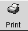

Printing Utilities in KDE and GNOME
Once you've configured your printer, you'll find KDE and GNOME provide utilities to help you monitor and modify printer settings and printing jobs.
Using Ljet Tool in KDE
In KDE, Ljet Tool can help you configure a Hewlett-Packard LaserJet printer in KDE.
Also called KLJetTool, the utility can allow you to modify your printer settings for all KDE-compliant applications. Ljet Tool can be used by regular users; not just by the root user.
 | Possible conflicts |
|---|---|
Ljet Tool is best suited for Hewlett-Packard LaserJet and compatible printers. The utility uses PCL, the same printer control language to control options used by Hewlett-Packard. If your printer isn't a Hewlett-Packard LaserJet or PCL-compatible printer, you may experience problems if you try to use Ljet. |
Starting Ljet Tool
You can start Ljet from the Panel or from the shell prompt.
To start the utility from the shell prompt, open an Xterm window and, at the prompt, type kljettool.
To start Ljet from the Panel, go to the Utilities menu, then go to HP LaserJet Control Panel (see Figure 5-9 for an example).
In four tabbed dialogs, the utility allows you to specify details like paper size, resolution, font size and more.
Most of the options are fairly self-explanatory, but some of the settings in the Fonts dialog may be a little confusing: specifically, the settings for Language and Symbol Set. See Figure 5-10 for an example.
The above dialog allows you to choose default settings for the characters which are used to print documents.
The Language entry defines which printer language is used to process your documents. By default, this is set to PCL, which is the standard printer language for Hewlett-Packard printers. You can use the drop-down list to select PostScript, however, if your printer has such capabilities.
The Symbol Set entry refers to the default character set you'd prefer to use when printing. The setting of PC8 is the default mode; if you want to print special math, Windows or non-English characters, however, you can make your selections here.
The Printer Queue in KDE
On the KDE desktop, the printer icon represents your printer queue. You can drag and drop files onto the printer icon to send them to the printer.
You can open the printer queue either by clicking on the printer icon on your desktop or by going to the Printer Queue item on the Utilities menu of the Panel (see Figure 5-11).
You can also open the printer queue by typing klpq at the shell prompt.
When you first start the printer queue application, you'll be asked which print spooler you use. By default, BSD will be checked, and you probably won't have to alter this setting.
When you open the printer queue, you won't see any entries in the queue (see Figure 5-12), unless you're currently printing a document.
A document you send to the printer will be displayed in the Printer Queue utility. See Figure 5-13 for an example of a document listed in the queue.
Once in the queue, you can see details about the job, such as the user who sent the job to the printer, its order in the printer queue -- if there is more than one job -- the size of the document and more.
The Printer Queue also allows you to change the order of jobs, or to remove printing jobs.
The Printer Applet in GNOME
GNOME offers a convenient way to drag and drop documents to the printer with the Printer Applet. The utility can be placed on the Panel.
To add the applet to the Panel, right-click on the Panel and drag your cursor to Add Applet => Utility => Printer Applet (see Figure 5-14). Release your mouse button over Printer Applet; the applet will appear on your Panel and look like: 
To use the applet, drag a document from a folder or from the file manager and "drop" it over the Print icon on the Panel. (When you hover your document over the icon and an outline surrounds the icon, you'll know that you can drop your document on the applet.) After a few moments, your document should begin printing.
You can adjust a couple of the settings in the Printer Applet by right-clicking on the applet in the Panel and selecting the Properties dialog.
In Printer properties (see Figure 5-15), you can select a name for the printer label on the Panel. Your default print command will most likely be lpr, so you should leave the Print command entry the default lpr.